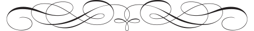

THE JONATHAN CLUB DRESS CODE
Traditional Club Attire is required at all times on the Third Floor.
Men: Business suit or collared dress sport jacket, collared shirt, necktie and closed-toe leather dress shoes.
Women: An equivalent standard, such as dress, business suit, pantsuit, blouse, skirt, tailored slacks and dress shoes..

UNACCEPTABLE ATTIRE
Denim jeans, shorts, cargo pants, sweats, tank tops, bare midriffs, excessively revealing clothing or clothing which might be viewed as offensive, hats and visors (women's dress hats are allowed).
Shoes: Rubber flip-flops, athletic shoes, men's clogs, sandals and open-toe shoes.